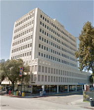

Silicon Valley Black Chamber of Commerce – SVBCC
“Where Diversity and Opportunity are One”
History
The Silicon Valley/Santa Clara County Black Chamber was incorporated as a 501(c)6, in 1989 by founding president and local business person Mr. Ron McPherson. Ron served as its president for ten years. Our current President Carl Davis Jr was its first Executive Director back in 1990.
In 2001, the Center for Entrepreneurial Development was created as a 501(c)3, to serve the community through its educational programs and its Incubator Project.
Our Mission
To create, identify and/or expand economic development opportunities for African Americans and minorities in Silicon Valley.
Our Goals
To increase the number and the success of African American and minority businesses in Silicon Valley while developing a pipe-line of future entrepreneurs through better education.
Overview

The Silicon Valley Black Chamber of Commerce is more than an organization for just businesses, it’s an integral part of the economic development fiber of our community.
When we speak of economic development we mean more than entrepreneurship. Although entrepreneurship is vital to many of our programs, we understand that the creation of jobs and the securing of these jobs is really what economic development is all about. Money has to flow into our community for our community to truly prosper. Membership is open to all individuals, seniors and youth, organizations and groups or associations that support our mission, along with business owners.
The chamber serves to create, identify or expand economic development opportunities for African American and minority businesses. We also provide financial planning tools and information for economic empowerment to both the business owner and the individual. We do this by producing workshops, trainings, seminars, mixers and the distributing of pertinent information to our members in as many ways as we can.
Our eMobile Solution, using ITA’s communication platform, connects B2B and B2C clients and customers that enhance the promotion, advertisement and selling of products and services. Doing business using “smart devices” is not a way of the future; it is the way to do business NOW! We are committed to using both traditional and innovative strategies to empower our community to overcome historical business and financial obstacles, such as access to capital, capacity building and getting our share of contracts.
The Chamber is also working to establish and insure a vital on-going community connection. Our participation in the outreach, education and enrollment of those needing quality affordable health care provided by Covered California is just one part of our goal to keep our community connected. We advocate for African-Americans and minority owned businesses, vendors and contractors to secure lucrative business opportunities. Our membership represents all facets of our community.
Board of Directors
Wilbur Jackson
Chairperson of the Board
Former IBM Software Mgr
Board Member since 2013
Jim White
Former IBM Exec
Board Member since 2015
Roger Hooks
Marketing Consultant
Board Member since 2010
Larry Moody
Exec Dir, Glad Tidings Community Development
Hayward, CA
Council Member City of East Palo Alto